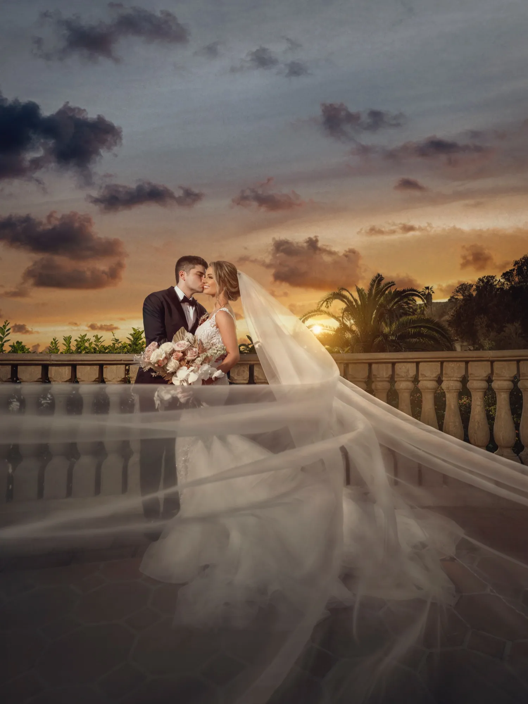
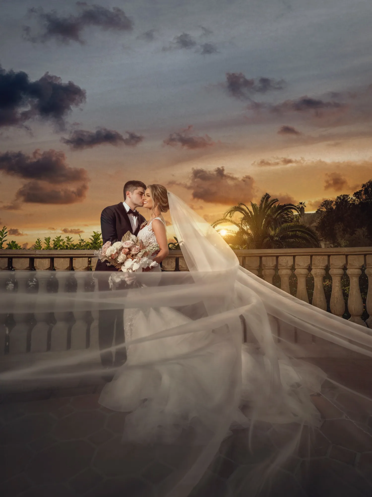
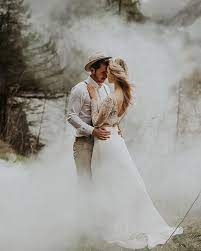
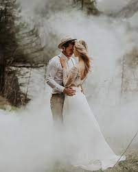

I Can Catch The Best
Moments Of Life
Ready for the photographs
that will make your heart stop?
You are in the right place !!!
Ready for the photographs
that will make your heart stop?
You are in the right place !!!

 


Our wedding photography is cinematic, meaning it focuses on movement, story, and quality lighting. We take great care to capture beautiful images from all parts of the day for our clients. Here is a gallery of some of our portfolio images & video.
We have one of the most active boudoir studios in Los Angeles. We offer photography, video, high-end hair & makeup, as well as many different luxury products for our clients. View our packages here.
We offer a unique experience for portrait photography. Whether you are looking to create wall-art for your home with a portrait of your family, or looking to capture beautiful maternity photos, we are able to create something unique for you.
Here at Michael Anthony Photography, my goal is to match your personality
and preferred aesthetic with an incredible wedding photography experience that you
and
your guests will never forget.We started documenting weddings in 2011,and since
then have been blessed to be able to travel the world for our clients.
Michael Anthony Photography is here to serve today’s modern, trendy brides.
Our images have been featured in top wedding sites and publications from Junebug
weddings to WeddingWire, California Wedding Day, The Huffington Post, Style Me Pretty,
and Bridal Guide. We pioneered a unique cinematic photography style, and has
been ranked #1 Wedding Photographer
in the USA by multiple organizations between 2018-2021
Our team of photographers and editors at Michael Anthony Photography are
handpicked by Michael Anthony and trained in our Wedding Creatives Academy.
Each one
possesses advanced skills in lighting, posing, and storytelling, and we certify less than 1% of
the photographers that apply for our program.
 


This is the signature MAPhoto style, which blends bursts of color with fashion inspired lighting to unify you and your environment. Though this is the most difficult style to shoot, our team is trained to create at least one image in this style for each part of your wedding day, and the results are perfect as framed wall art for your home.
As Los Angeles wedding photographers, we often shoot couples in well lighted as well as not-well lighted areas. Natural light is a hot topic among folks in the photography industry, and we are able to create this clean, airy, and light look for you even when the light is low. This timeless, classic form of photography will never go out of style.
If you love seeing the emotion from your wedding day, you will resonate deeply with our second style, which we create by capturing emotional moments as they unfold before our eyes. Photojournalism is the key component to a successful story. Images that are not prompted can give us the best quality foundation for a beautiful album
As Los Angeles Wedding Photographers our goal is to provide our clients with unique photography that they will cherish forever. If you are looking to get married at any of the amazing wedding venues in Los Angeles, you will want to make sure that your day is captured in a way that is memorable. Our goal is to provide all of our LA wedding clients with that service and style. With a fashion flair and a creative take on photojournalism, our clients are our number 1 priority.
Being Wedding Photographers in Orange County, we have photographed at some pretty incredible Orange County Wedding Venues. It has always been our goal to provide our clients with some of the most beautiful wedding pictures from the beautiful California coasts. We offer affordable Orange County Wedding and Video packages and would love to provide you with a free quote. Please get in touch with us with any questions that you may have.
Santa Barbara and Ventura County can provide one of the most picturesque locations for wedding photography in all of California. Our studio is located less than an hour away from Ventura County and is easily accessible via the 126 Freeway.If you are looking for a wedding photographer in Santa Barbara, our team of talented professionals can provide you with the best service and affordable packages. Please get in touch with us today in order to check availability for your wedding day.